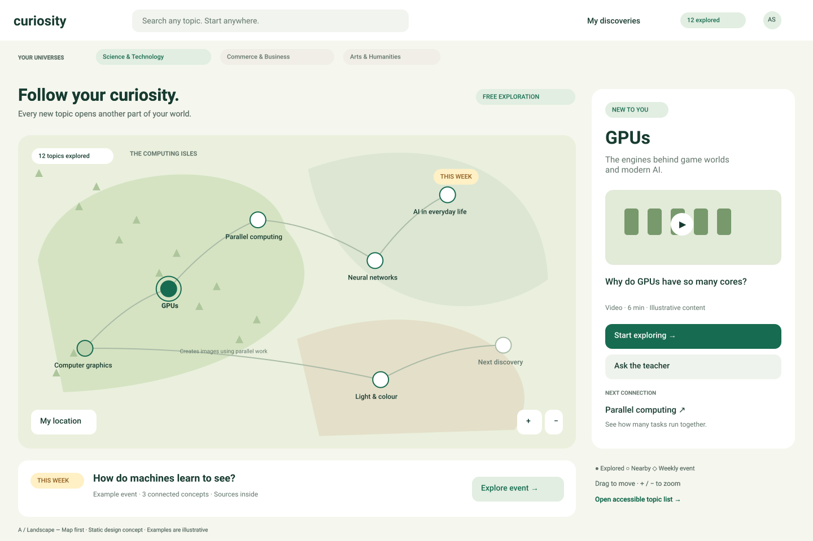
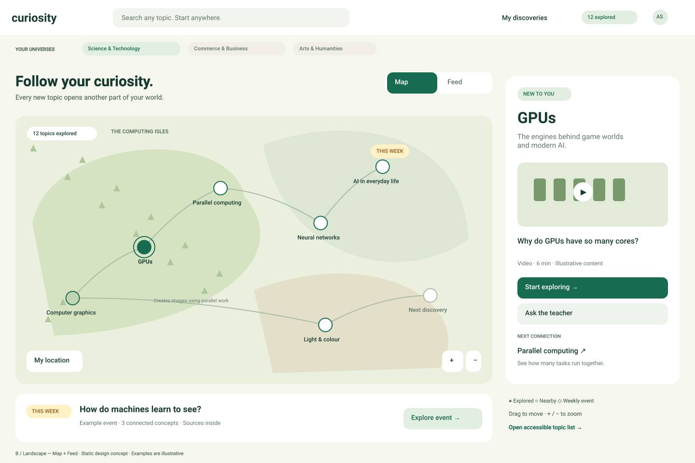
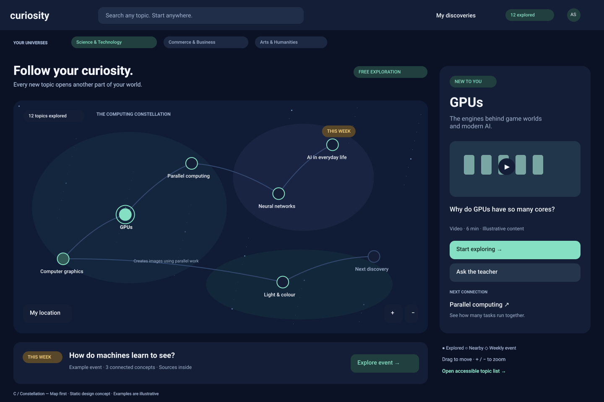

Curiosity — Graph conceptsChoose your learning world
Compare the same topic in two visual styles and two navigation options.
Achievements unlock on first exploration. News examples are illustrative.

Open all 4 screens →

Open all 6 screens →

Open all 4 screens →

Open all 6 screens →